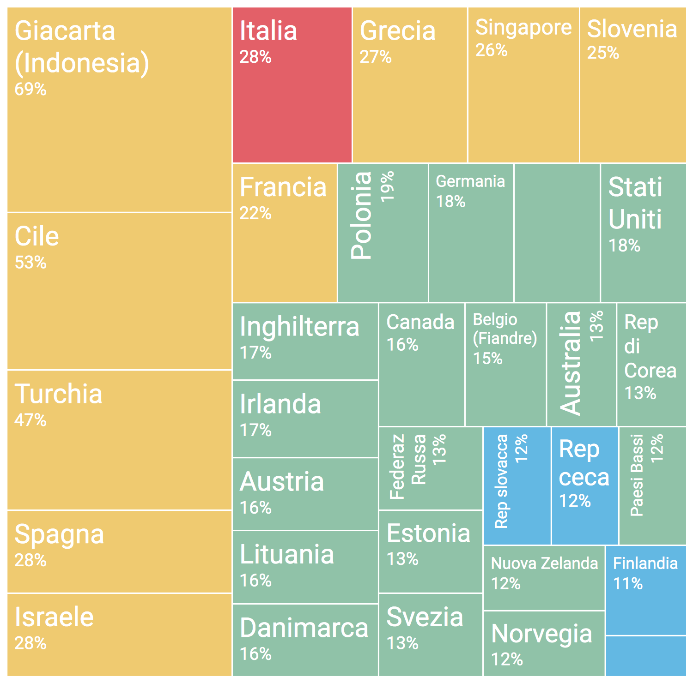

Si consideri il seguente grafico pubblicato all'interno di un articolo de L'Espresso del 21 Marzo 2017.
Il grafico (nell'articolo) è accompagnato dalla seguente didascalia:
Distribuzione degli analfabeti funzionali (%) nel quadro dei 33 paesi partecipanti allo studio PIAAC.
L'Italia ha tra i risultati più alti in Europa (28%), preceduta solo dalla Turchia.
Fonte: Inapp su dati Ocse-Piaac
Analisi
Analizzare il grafico sopra riportato secondo gli aspetti seguenti:Question:- è stata definita chiaramente o è evidente una domanda (o più di una) a cui la visualizzazione risponde?
La domanda è abbastanza chiaramente definita nella didascalia.
L'obiettivo del grafico è mostrare i livelli di analfabetismo funzionale in diversi paesi (quelli che aderiscono al progetto Ocse-Piaac) ed evidenziare come l'Italia abbia valori piuttosto alti.
Data:- i dati mostrati sono validi e supportano la domanda?
In generale i dati sono ragionevolmente adatti a rispondere alla domanda: si tratta di percentuali di analfabeti funzionali sulle popolazioni totali delle nazioni.
I dati in quanto tali sono perfettamente confrontabili, non sarebbero invece confrontabili i numeri assoluti di analfabeti perchè i paesi hanno popolazioni molti diverse.
Esistono due aspetti anomali da segnalare:
- Due "paesi" ("Giacarta (Indonesia)" e "Belgio (Fiandre)") non rappresentano delle intere nazioni ma delle sotto-aree. Questi valori potrebbero non essere rappresentativi delle nazioni relative e quindi non direttamente confrontabili.
- Due aree appaiono nel diagramma senza etichette.
Per questo si possono fare diverse ipotesi (elencate dalla meno ragionevole alla più ragionevole):
- i rettangoli non etichettati non fanno riferimento ad alcun paese e sono presenti per qualche motivo non chiaro (ad es. solo per mantenere la forma generale del diagramma)
- fanno riferimento a due paesi di cui non è noto il nome
- per qualche errore le due etichette non compaiono nel grafico (questa è la spiegazione corretta: il diagramma viene mostrato senza etichetta in alcuni browser e correttamente in altri)
Un aspetto secondario è rappresentato dal fatto che i dati sono riportati senza alcuna cifra decimale ma apparentemente ci sono stati con differenze inferiori all'1% che non possono essere discriminati a causa della limitata accuratezza dei dati.
Visual:le caratteristiche visuali sono usate appropriatamente?
Riguardo gli aspetti visuali si valuti l’integrità visuale secondo i tre aspetti:
Proportionality:- le misure sono riportate in maniera uniformemente proporzionale?
Il diagramma è un treemap che è adatto a rappresentare una relazione di tipo parte-tutto. Perciò se il rettangolo "Giacarta (Indonesia)" occupa circa il 10% dell'area del grafico complessivo, dovrebbe rappresentare la stessa percentuale e non il 69%.
Trattandosi di percentuali di analfabeti funzionali sulla popolazione dei diversi paesi, tali valori ovviamente non sommano a 100%, requisito base per questo tipo di diagramma.
Quindi non esiste in assoluto la proporzionalità.
Utility:- tutti gli elementi presenti nel grafico trasmettono informazioni utili?
L'aspetto che non ha una chiara utilità è la colorazione delle tessere che compongono il diagramma. Potrebbero rappresentare diversi livelli ma questo non è indicato in alcun modo.
Come aspetto secondario, la dimensione delle etichette non ha nessun ruolo apparente.
Clarity:- i dati del grafico sono chiaramente identificabili e comprensibili (opportunamente descritti)?
Con riferimento alla colorazione di cui sopra, mancando una legenda, oltre a non essere utili, i colori diversi confondono il lettore.
L'orientamento delle etichette rende difficile la lettura.
Oltre alla inadeguatezza del tipo di grafico ai dati da mostrare, l'orientamento diverso dei rettangoli e le proporzioni variabili rendono il confronto difficile.
Design
Riprogettare la visualizzazione in modo da risolvere i problemi evidenziati nell'analisi.
Soluzione 1: dot plot
Soluzione 2: bar plot
Soluzione 3: bar plot con "direct labeling"
Soluzione 4: box e violin plots
Soluzione 5: curva delle frequenze (poligono di frequenza)
Inserire le risposte all'interno del presente file,
in particolare negli elementi <div>
che hanno come classe answer.